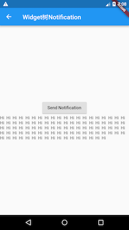

8.4 Notification¶
通知（Notification）是Flutter中一个重要的机制，在widget树中，每一个节点都可以分发通知，通知会沿着当前节点向上传递，所有父节点都可以通过NotificationListener来监听通知。Flutter中将这种由子向父的传递通知的机制称为通知冒泡（Notification Bubbling）。通知冒泡和用户触摸事件冒泡是相似的，但有一点不同：通知冒泡可以中止，但用户触摸事件不行。
通知冒泡和Web开发中浏览器事件冒泡原理是相似的，都是事件从出发源逐层向上传递，我们可以在上层节点任意位置来监听通知/事件，也可以终止冒泡过程，终止冒泡后，通知将不会再向上传递。
Flutter中很多地方使用了通知，如可滚动组件（Scrollable Widget）滑动时就会分发滚动通知（ScrollNotification），而Scrollbar正是通过监听ScrollNotification来确定滚动条位置的。
下面是一个监听可滚动组件滚动通知的例子：
NotificationListener(
onNotification: (notification){
switch (notification.runtimeType){
case ScrollStartNotification: print("开始滚动"); break;
case ScrollUpdateNotification: print("正在滚动"); break;
case ScrollEndNotification: print("滚动停止"); break;
case OverscrollNotification: print("滚动到边界"); break;
}
},
child: ListView.builder(
itemCount: 100,
itemBuilder: (context, index) {
return ListTile(title: Text("$index"),);
}
),
);
上例中的滚动通知如ScrollStartNotification、ScrollUpdateNotification等都是继承自ScrollNotification类，不同类型的通知子类会包含不同的信息，比如ScrollUpdateNotification有一个scrollDelta属性，它记录了移动的位移，其它通知属性读者可以自己查看SDK文档。
上例中，我们通过NotificationListener来监听子ListView的滚动通知的，NotificationListener定义如下：
class NotificationListener<T extends Notification> extends StatelessWidget {
const NotificationListener({
Key key,
@required this.child,
this.onNotification,
}) : super(key: key);
...//省略无关代码
}
我们可以看到：
NotificationListener继承自StatelessWidget类，所以它可以直接嵌套到Widget树中。NotificationListener可以指定一个模板参数，该模板参数类型必须是继承自Notification；当显式指定模板参数时，NotificationListener便只会接收该参数类型的通知。举个例子，如果我们将上例子代码改为：//指定监听通知的类型为滚动结束通知(ScrollEndNotification) NotificationListener<ScrollEndNotification>( onNotification: (notification){ //只会在滚动结束时才会触发此回调 print(notification); }, child: ListView.builder( itemCount: 100, itemBuilder: (context, index) { return ListTile(title: Text("$index"),); } ), );
上面代码运行后便只会在滚动结束时在控制台打印出通知的信息。
onNotification回调为通知处理回调，其函数签名如下：typedef NotificationListenerCallback<T extends Notification> = bool Function(T notification);
它的返回值类型为布尔值，当返回值为
true时，阻止冒泡，其父级Widget将再也收不到该通知；当返回值为false时继续向上冒泡通知。
Flutter的UI框架实现中，除了在可滚动组件在滚动过程中会发出ScrollNotification之外，还有一些其它的通知，如SizeChangedLayoutNotification、KeepAliveNotification 、LayoutChangedNotification等，Flutter正是通过这种通知机制来使父元素可以在一些特定时机来做一些事情。
自定义通知¶
除了Flutter内部通知，我们也可以自定义通知，下面我们看看如何实现自定义通知：
定义一个通知类，要继承自Notification类；
class MyNotification extends Notification { MyNotification(this.msg); final String msg; }
分发通知。
Notification有一个dispatch(context)方法，它是用于分发通知的，我们说过context实际上就是操作Element的一个接口，它与Element树上的节点是对应的，通知会从context对应的Element节点向上冒泡。
下面我们看一个完整的例子：
class NotificationRoute extends StatefulWidget {
@override
NotificationRouteState createState() {
return new NotificationRouteState();
}
}
class NotificationRouteState extends State<NotificationRoute> {
String _msg="";
@override
Widget build(BuildContext context) {
//监听通知
return NotificationListener<MyNotification>(
onNotification: (notification) {
setState(() {
_msg+=notification.msg+" ";
});
return true;
},
child: Center(
child: Column(
mainAxisSize: MainAxisSize.min,
children: <Widget>[
// RaisedButton(
// onPressed: () => MyNotification("Hi").dispatch(context),
// child: Text("Send Notification"),
// ),
Builder(
builder: (context) {
return RaisedButton(
//按钮点击时分发通知
onPressed: () => MyNotification("Hi").dispatch(context),
child: Text("Send Notification"),
);
},
),
Text(_msg)
],
),
),
);
}
}
class MyNotification extends Notification {
MyNotification(this.msg);
final String msg;
}
上面代码中，我们每点一次按钮就会分发一个MyNotification类型的通知，我们在Widget根上监听通知，收到通知后我们将通知通过Text显示在屏幕上。
注意：代码中注释的部分是不能正常工作的，因为这个
context是根Context，而NotificationListener是监听的子树，所以我们通过Builder来构建RaisedButton，来获得按钮位置的context。
运行效果如图8-6所示：

阻止冒泡¶
我们将上面的例子改为：
class NotificationRouteState extends State<NotificationRoute> {
String _msg="";
@override
Widget build(BuildContext context) {
//监听通知
return NotificationListener<MyNotification>(
onNotification: (notification){
print(notification.msg); //打印通知
return false;
},
child: NotificationListener<MyNotification>(
onNotification: (notification) {
setState(() {
_msg+=notification.msg+" ";
});
return false;
},
child: ...//省略重复代码
),
);
}
}
上列中两个NotificationListener进行了嵌套，子NotificationListener的onNotification回调返回了false，表示不阻止冒泡，所以父NotificationListener仍然会受到通知，所以控制台会打印出通知信息；如果将子NotificationListener的onNotification回调的返回值改为true，则父NotificationListener便不会再打印通知了，因为子NotificationListener已经终止通知冒泡了。
通知冒泡原理¶
我们在上面介绍了通知冒泡的现象及使用，现在我们更深入一些，介绍一下Flutter框架中是如何实现通知冒泡的。为了搞清楚这个问题，就必须看一下源码，我们从通知分发的的源头出发，然后再顺藤摸瓜。由于通知是通过Notification的dispatch(context)方法发出的，那我们先看看dispatch(context)方法中做了什么，下面是相关源码：
void dispatch(BuildContext target) {
target?.visitAncestorElements(visitAncestor);
}
dispatch(context)中调用了当前context的visitAncestorElements方法，该方法会从当前Element开始向上遍历父级元素；visitAncestorElements有一个遍历回调参数，在遍历过程中对遍历到的父级元素都会执行该回调。遍历的终止条件是：已经遍历到根Element或某个遍历回调返回false。源码中传给visitAncestorElements方法的遍历回调为visitAncestor方法，我们看看visitAncestor方法的实现：
//遍历回调，会对每一个父级Element执行此回调
bool visitAncestor(Element element) {
//判断当前element对应的Widget是否是NotificationListener。
//由于NotificationListener是继承自StatelessWidget，
//故先判断是否是StatelessElement
if (element is StatelessElement) {
//是StatelessElement，则获取element对应的Widget，判断
//是否是NotificationListener 。
final StatelessWidget widget = element.widget;
if (widget is NotificationListener<Notification>) {
//是NotificationListener，则调用该NotificationListener的_dispatch方法
if (widget._dispatch(this, element))
return false;
}
}
return true;
}
visitAncestor 会判断每一个遍历到的父级Widget是否是NotificationListener，如果不是，则返回true继续向上遍历，如果是，则调用NotificationListener的_dispatch方法，我们看看_dispatch方法的源码：
bool _dispatch(Notification notification, Element element) {
// 如果通知监听器不为空，并且当前通知类型是该NotificationListener
// 监听的通知类型，则调用当前NotificationListener的onNotification
if (onNotification != null && notification is T) {
final bool result = onNotification(notification);
// 返回值决定是否继续向上遍历
return result == true;
}
return false;
}
我们可以看到NotificationListener的onNotification回调最终是在_dispatch方法中执行的，然后会根据返回值来确定是否继续向上冒泡。上面的源码实现其实并不复杂，通过阅读这些源码，一些额外的点读者可以注意一下：
Context上也提供了遍历Element树的方法。我们可以通过
Element.widget得到element节点对应的widget；我们已经反复讲过Widget和Element的对应关系，读者通过这些源码来加深理解。
总结¶
Flutter中通过通知冒泡实现了一套自低向上的消息传递机制，这个和Web开发中浏览器的事件冒泡原理类似，Web开发者可以类比学习。另外我们通过源码了解了Flutter 通知冒泡的流程和原理，便于读者加深理解和学习Flutter的框架设计思想，在此，再次建议读者在平时学习中能多看看源码，定会受益匪浅。